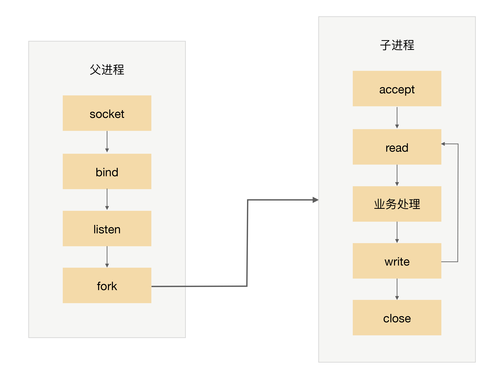
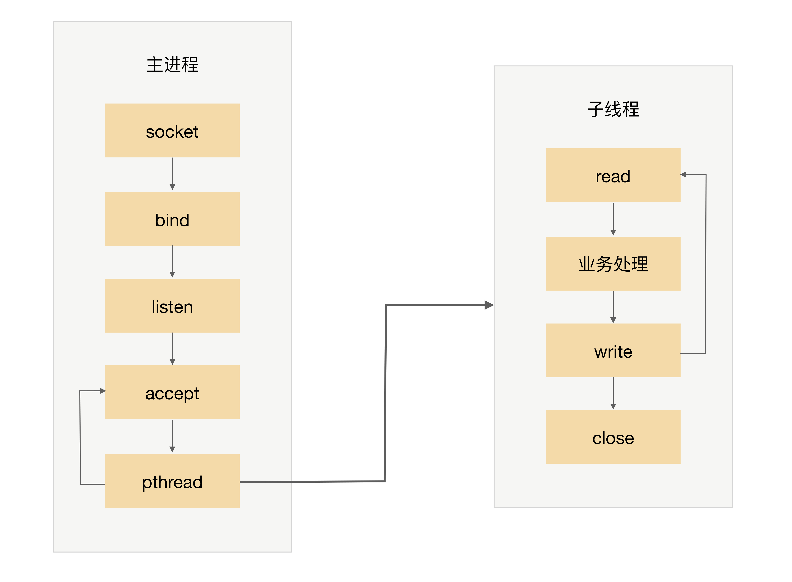

- 00 开篇词 照着做，你也能成为架构师！.md.html
- 01 架构到底是指什么？.md.html
- 02 架构设计的历史背景.md.html
- 03 架构设计的目的.md.html
- 04 复杂度来源：高性能.md.html
- 05 复杂度来源：高可用.md.html
- 06 复杂度来源：可扩展性.md.html
- 07 复杂度来源：低成本、安全、规模.md.html
- 08 架构设计三原则.md.html
- 09 架构设计原则案例.md.html
- 10 架构设计流程：识别复杂度.md.html
- 11 架构设计流程：设计备选方案.md.html
- 12 架构设计流程：评估和选择备选方案.md.html
- 13 架构设计流程：详细方案设计.md.html
- 14 高性能数据库集群：读写分离.md.html
- 15 高性能数据库集群：分库分表.md.html
- 16 高性能NoSQL.md.html
- 17 高性能缓存架构.md.html
- 18 单服务器高性能模式：PPC与TPC.md.html
- 19 单服务器高性能模式：Reactor与Proactor.md.html
- 20 高性能负载均衡：分类及架构.md.html
- 21 高性能负载均衡：算法.md.html
- 22 想成为架构师，你必须知道CAP理论.md.html
- 23 想成为架构师，你必须掌握的CAP细节.md.html
- 24 FMEA方法，排除架构可用性隐患的利器.md.html
- 25 高可用存储架构：双机架构.md.html
- 26 高可用存储架构：集群和分区.md.html
- 27 如何设计计算高可用架构？.md.html
- 28 业务高可用的保障：异地多活架构.md.html
- 29 异地多活设计4大技巧.md.html
- 30 异地多活设计4步走.md.html
- 31 如何应对接口级的故障？.md.html
- 32 可扩展架构的基本思想和模式.md.html
- 33 传统的可扩展架构模式：分层架构和SOA.md.html
- 34 深入理解微服务架构：银弹 or 焦油坑？.md.html
- 35 微服务架构最佳实践 - 方法篇.md.html
- 36 微服务架构最佳实践 - 基础设施篇.md.html
- 37 微内核架构详解.md.html
- 38 架构师应该如何判断技术演进的方向？.md.html
- 39 互联网技术演进的模式.md.html
- 40 互联网架构模板：存储层技术.md.html
- 41 互联网架构模板：开发层和服务层技术.md.html
- 42 互联网架构模板：网络层技术.md.html
- 43 互联网架构模板：用户层和业务层技术.md.html
- 44 互联网架构模板：平台技术.md.html
- 45 架构重构内功心法第一式：有的放矢.md.html
- 46 架构重构内功心法第二式：合纵连横.md.html
- 47 架构重构内功心法第三式：运筹帷幄.md.html
- 48 再谈开源项目：如何选择、使用以及二次开发？.md.html
- 49 谈谈App架构的演进.md.html
- 50 架构实战：架构设计文档模板.md.html
- 51 如何画出优秀的软件系统架构图？.md.html
- 加餐｜业务架构实战营开营了.md.html
- 加餐｜单服务器高性能模式性能对比.md.html
- 加餐｜扒一扒中台皇帝的外衣.md.html
- 如何高效地学习开源项目 华仔，放学别走！ 第3期.md.html
- 新书首发 《从零开始学架构》.md.html
- 架构专栏特别放送 华仔，放学别走！ 第2期.md.html
- 架构专栏特别放送 华仔，放学别走！第1期.md.html
- 架构师必读书单 华仔，放学别走！ 第5期.md.html
- 架构师成长之路 华仔，放学别走！ 第4期.md.html
- 结束语 坚持，成就你的技术梦想.md.html
- 捐赠
18 单服务器高性能模式：PPC与TPC
高性能是每个程序员的追求，无论我们是做一个系统还是写一行代码，都希望能够达到高性能的效果，而高性能又是最复杂的一环，磁盘、操作系统、CPU、内存、缓存、网络、编程语言、架构等，每个都有可能影响系统达到高性能，一行不恰当的debug日志，就可能将服务器的性能从TPS 30000降低到8000；一个tcp_nodelay参数，就可能将响应时间从2毫秒延长到40毫秒。因此，要做到高性能计算是一件很复杂很有挑战的事情，软件系统开发过程中的不同阶段都关系着高性能最终是否能够实现。
站在架构师的角度，当然需要特别关注高性能架构的设计。高性能架构设计主要集中在两方面：
- 尽量提升单服务器的性能，将单服务器的性能发挥到极致。
- 如果单服务器无法支撑性能，设计服务器集群方案。
除了以上两点，最终系统能否实现高性能，还和具体的实现及编码相关。但架构设计是高性能的基础，如果架构设计没有做到高性能，则后面的具体实现和编码能提升的空间是有限的。形象地说，架构设计决定了系统性能的上限，实现细节决定了系统性能的下限。
单服务器高性能的关键之一就是服务器采取的并发模型，并发模型有如下两个关键设计点：
- 服务器如何管理连接。
- 服务器如何处理请求。
以上两个设计点最终都和操作系统的I/O模型及进程模型相关。
- I/O模型：阻塞、非阻塞、同步、异步。
- 进程模型：单进程、多进程、多线程。
在下面详细介绍并发模型时会用到上面这些基础的知识点，所以我建议你先检测一下对这些基础知识的掌握情况，更多内容你可以参考《UNIX网络编程》三卷本。今天，我们先来看看单服务器高性能模式：PPC与TPC。
PPC
PPC是Process Per Connection的缩写，其含义是指每次有新的连接就新建一个进程去专门处理这个连接的请求，这是传统的UNIX网络服务器所采用的模型。基本的流程图是：

- 父进程接受连接（图中accept）。
- 父进程“fork”子进程（图中fork）。
- 子进程处理连接的读写请求（图中子进程read、业务处理、write）。
- 子进程关闭连接（图中子进程中的close）。
注意，图中有一个小细节，父进程“fork”子进程后，直接调用了close，看起来好像是关闭了连接，其实只是将连接的文件描述符引用计数减一，真正的关闭连接是等子进程也调用close后，连接对应的文件描述符引用计数变为0后，操作系统才会真正关闭连接，更多细节请参考《UNIX网络编程：卷一》。
PPC模式实现简单，比较适合服务器的连接数没那么多的情况，例如数据库服务器。对于普通的业务服务器，在互联网兴起之前，由于服务器的访问量和并发量并没有那么大，这种模式其实运作得也挺好，世界上第一个web服务器CERN httpd就采用了这种模式（具体你可以参考https://en.wikipedia.org/wiki/CERN_httpd）。互联网兴起后，服务器的并发和访问量从几十剧增到成千上万，这种模式的弊端就凸显出来了，主要体现在这几个方面：
- fork代价高：站在操作系统的角度，创建一个进程的代价是很高的，需要分配很多内核资源，需要将内存映像从父进程复制到子进程。即使现在的操作系统在复制内存映像时用到了Copy on Write（写时复制）技术，总体来说创建进程的代价还是很大的。
- 父子进程通信复杂：父进程“fork”子进程时，文件描述符可以通过内存映像复制从父进程传到子进程，但“fork”完成后，父子进程通信就比较麻烦了，需要采用IPC（Interprocess Communication）之类的进程通信方案。例如，子进程需要在close之前告诉父进程自己处理了多少个请求以支撑父进程进行全局的统计，那么子进程和父进程必须采用IPC方案来传递信息。
- 支持的并发连接数量有限：如果每个连接存活时间比较长，而且新的连接又源源不断的进来，则进程数量会越来越多，操作系统进程调度和切换的频率也越来越高，系统的压力也会越来越大。因此，一般情况下，PPC方案能处理的并发连接数量最大也就几百。
prefork
PPC模式中，当连接进来时才fork新进程来处理连接请求，由于fork进程代价高，用户访问时可能感觉比较慢，prefork模式的出现就是为了解决这个问题。
顾名思义，prefork就是提前创建进程（pre-fork）。系统在启动的时候就预先创建好进程，然后才开始接受用户的请求，当有新的连接进来的时候，就可以省去fork进程的操作，让用户访问更快、体验更好。prefork的基本示意图是：

prefork的实现关键就是多个子进程都accept同一个socket，当有新的连接进入时，操作系统保证只有一个进程能最后accept成功。但这里也存在一个小小的问题：“惊群”现象，就是指虽然只有一个子进程能accept成功，但所有阻塞在accept上的子进程都会被唤醒，这样就导致了不必要的进程调度和上下文切换了。幸运的是，操作系统可以解决这个问题，例如Linux 2.6版本后内核已经解决了accept惊群问题。
prefork模式和PPC一样，还是存在父子进程通信复杂、支持的并发连接数量有限的问题，因此目前实际应用也不多。Apache服务器提供了MPM prefork模式，推荐在需要可靠性或者与旧软件兼容的站点时采用这种模式，默认情况下最大支持256个并发连接。
TPC
TPC是Thread Per Connection的缩写，其含义是指每次有新的连接就新建一个线程去专门处理这个连接的请求。与进程相比，线程更轻量级，创建线程的消耗比进程要少得多；同时多线程是共享进程内存空间的，线程通信相比进程通信更简单。因此，TPC实际上是解决或者弱化了PPC fork代价高的问题和父子进程通信复杂的问题。
TPC的基本流程是：

- 父进程接受连接（图中accept）。
- 父进程创建子线程（图中pthread）。
- 子线程处理连接的读写请求（图中子线程read、业务处理、write）。
- 子线程关闭连接（图中子线程中的close）。
注意，和PPC相比，主进程不用“close”连接了。原因是在于子线程是共享主进程的进程空间的，连接的文件描述符并没有被复制，因此只需要一次close即可。
TPC虽然解决了fork代价高和进程通信复杂的问题，但是也引入了新的问题，具体表现在：
- 创建线程虽然比创建进程代价低，但并不是没有代价，高并发时（例如每秒上万连接）还是有性能问题。
- 无须进程间通信，但是线程间的互斥和共享又引入了复杂度，可能一不小心就导致了死锁问题。
- 多线程会出现互相影响的情况，某个线程出现异常时，可能导致整个进程退出（例如内存越界）。
除了引入了新的问题，TPC还是存在CPU线程调度和切换代价的问题。因此，TPC方案本质上和PPC方案基本类似，在并发几百连接的场景下，反而更多地是采用PPC的方案，因为PPC方案不会有死锁的风险，也不会多进程互相影响，稳定性更高。
prethread
TPC模式中，当连接进来时才创建新的线程来处理连接请求，虽然创建线程比创建进程要更加轻量级，但还是有一定的代价，而prethread模式就是为了解决这个问题。
和prefork类似，prethread模式会预先创建线程，然后才开始接受用户的请求，当有新的连接进来的时候，就可以省去创建线程的操作，让用户感觉更快、体验更好。
由于多线程之间数据共享和通信比较方便，因此实际上prethread的实现方式相比prefork要灵活一些，常见的实现方式有下面几种：
- 主进程accept，然后将连接交给某个线程处理。
- 子线程都尝试去accept，最终只有一个线程accept成功，方案的基本示意图如下：

Apache服务器的MPM worker模式本质上就是一种prethread方案，但稍微做了改进。Apache服务器会首先创建多个进程，每个进程里面再创建多个线程，这样做主要是为了考虑稳定性，即：即使某个子进程里面的某个线程异常导致整个子进程退出，还会有其他子进程继续提供服务，不会导致整个服务器全部挂掉。
prethread理论上可以比prefork支持更多的并发连接，Apache服务器MPM worker模式默认支持16 × 25 = 400 个并发处理线程。
小结
今天我为你讲了传统的单服务器高性能模式PPC与TPC，希望对你有所帮助。
这就是今天的全部内容，留一道思考题给你吧，什么样的系统比较适合本期所讲的高性能模式？原因是什么？
© 2019 - 2023 Liangliang Lee. Powered by gin and hexo-theme-book.